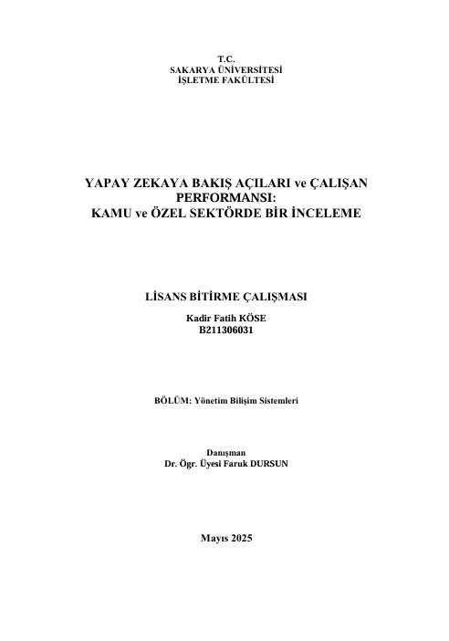
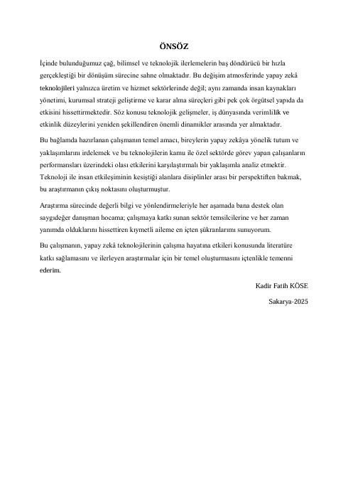

Yapay zekâ teknolojilerine yönelik toplumsal ve kurumsal perspektiflerin çalışan performansı üzerindeki etkilerini inceleyen, kamu ve özel sektör bağlamında ampirik verilere dayalı karşılaştırmalı bir lisans bitirme çalışmasıdır.
Bu çalışmada, yapay zekânın iş gücü dinamiklerine etkisi; çalışanların verimliliği, motivasyon düzeyi ve görev tanımlarındaki değişim ekseninde değerlendirilmiştir. Araştırma kapsamında, Türkiye genelinde kamu ve özel sektörde aktif olarak görev yapan 84 katılımcıdan anket yoluyla birincil veri toplanmıştır. Elde edilen ampirik veriler, SPSS 22.0 programı kullanılarak geçerlilik, güvenilirlik, faktör analizi ve normallik testlerine tabi tutulmuştur. Verilerin normal dağılım göstermemesi nedeniyle hipotezlerin test edilmesinde parametrik olmayan analiz tekniklerinden Mann-Whitney U ve Kruskal-Wallis H testleri tercih edilerek derinlemesine istatistiksel analizler gerçekleştirilmiştir.
Araştırmanın temel odağı olan "Hipotez 1: Çalışanların yapay zekâ algıları ile çalışma performansları arasında pozitif ve anlamlı bir ilişki vardır" tezi, yapılan Spearman's korelasyon analizleri sonucunda istatistiksel olarak desteklenmemiştir.
Ana Çıktı: Elde edilen ampirik bulgular, çalışanların yapay zekâya yönelik olumlu ya da olumsuz tutumlarının doğrudan bir performans artışı veya azalışı ile ilişkili olmadığını; yapay zekânın iş yerlerindeki performans modellerinde henüz doğrudan belirleyici bir faktör olarak öne çıkmadığını göstermektedir.

